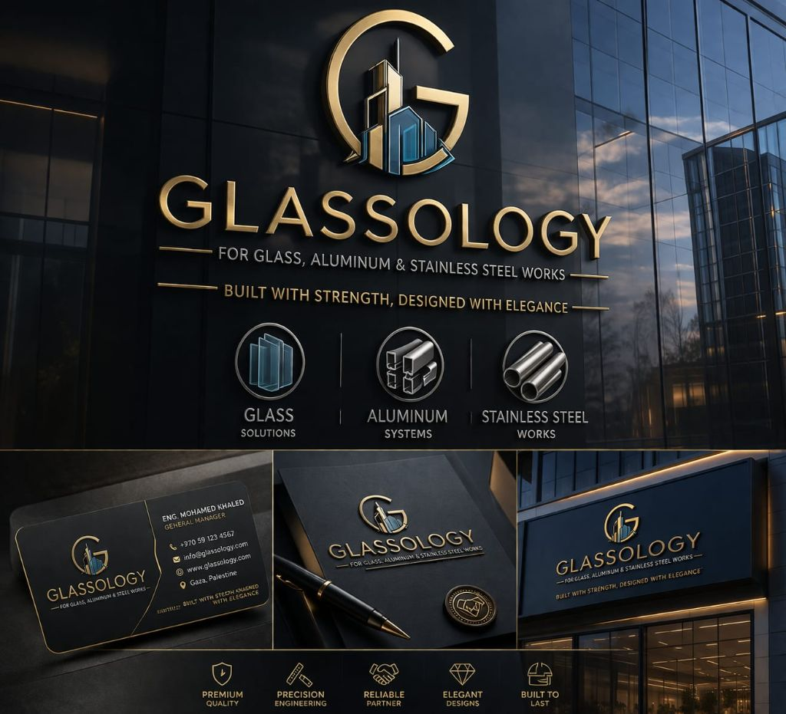
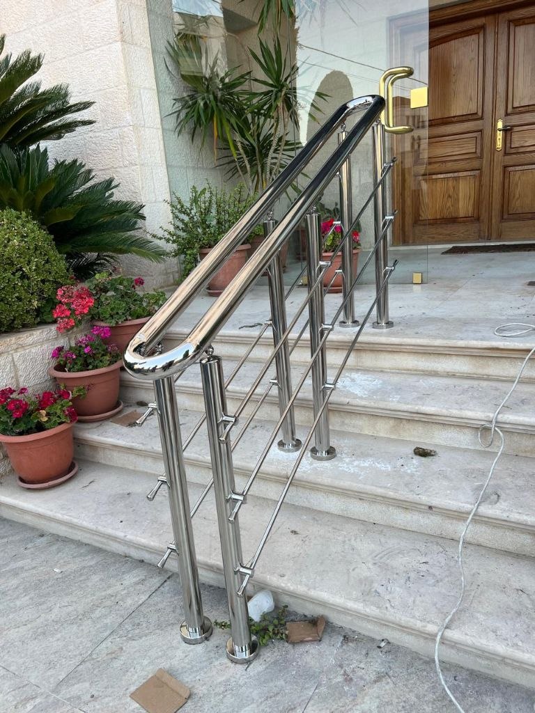
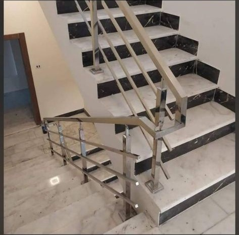

الدرابزين والدرابزين
الأنظمة الداخلية والخارجية مصممة لتحقيق السلامة والمتانة والتفاصيل المتميزة.

تصنيع الفولاذ المقاوم للصدأ المتميز في الأردن
من الدرابزين والدرابزين إلى البوابات والألواح الزخرفية والكسوة والتصنيع المخصص، تقدم شركة Glassology أعمالًا فولاذية تبدو صلبة ومكررة ومتعمدة من الناحية المعمارية.


تم تصميم هذه الصفحة لتحويل عمليات البحث عن تصنيع الفولاذ المقاوم للصدأ، والسور، والأعمال المعدنية المزخرفة، والحلول التجارية المخصصة. يتحدث المحتوى عن الجودة النهائية والثقة الهيكلية والتنفيذ الخاص بالمشروع بدلاً من لغة التصنيع العامة.
تمت كتابة كل كتلة أدناه لدعم أهمية تحسين محركات البحث وتسهيل عملية اتخاذ القرار للمشتري.
الأنظمة الداخلية والخارجية مصممة لتحقيق السلامة والمتانة والتفاصيل المتميزة.
تتميز باللوحات والعناصر المعمارية التي تضيف الملمس والإيقاع والتباين المادي.
عناصر مصنعة آمنة ومجهزة جيدًا للفيلات والمداخل والتطبيقات المحيطة.
العدادات والديكورات والكسوة وأنظمة الحماية والقطع المخصصة للبيئات عالية الاستخدام.
تم إعداد المكونات المصنعة الخاصة بالمشروع وفقًا لواقع الاستخدام والتركيب.
تم إنشاء حلول مخصصة من الفولاذ المقاوم للصدأ حول الأبعاد ومراجع التصميم وتوقعات النهاية.
عادةً ما يهتم العملاء الذين يبحثون عن أعمال الفولاذ المقاوم للصدأ بالمظهر بقدر اهتمامهم بالوظيفة. تمت كتابة هذه الصفحة لتوضيح توقعات الجودة، وملاءمة المشروع، وكيف يجب أن تبدو النتيجة المصنعة الأكثر تميزًا في الموقع.
أرسلها مباشرة واحصل على توجيه أسرع بشأن خيارات النظام، وإنهاء التوصيات، والخطوات التالية.
غالبًا ما تكون عناصر الفولاذ المقاوم للصدأ هي المكونات التي يلمسها الأشخاص ويلاحظونها عن قرب ويتذكرونها. ولهذا السبب تعتمد الجودة النهائية على أكثر من مجرد التصنيع وحده، فهي تعتمد على التناسب والتلميع والتثبيت وكيفية وضع القطعة داخل المساحة الأكبر.
يوضح تسلسل العملية أن جودة الفولاذ المقاوم للصدأ تتم إدارتها من خلال المراجعة والقياس وانضباط التصنيع والتشطيب - ولا يتم تركها للصدفة في مرحلة التثبيت.
نقوم بمراجعة الاستخدام والبيئة والأبعاد وأسلوب التشطيب والمتانة المطلوبة قبل التخطيط للتصنيع.
تتماشى التفاصيل مع ظروف الموقع ونقاط التثبيت واحتياجات السلامة والأهداف المرئية.
تم تجهيز المقاطع الفولاذية وجودة اللحام والتلميع وتفاصيل التجميع للتنفيذ المتميز.
يضمن تركيب الموقع والمحاذاة ومراجعة الانتهاء أن يكون العمل النهائي قويًا ومصقولًا.
يعمل الارتباط المتقاطع على تقوية التنقل وتحسين بنية تحسين محركات البحث (SEO) وتسهيل اكتشاف الخدمات التكميلية للزائرين.
تدعم مجموعة الأسئلة الشائعة هذه رؤية البحث الطويل وتزيل الاحتكاك قبل الاتصال.
نعم. توفر شركة جلالوجولوجي درابزين ودرابزين من الفولاذ المقاوم للصدأ للمشاريع السكنية والتجارية والمعمارية في الأردن.
نعم. تعد اللوحات الزخرفية والعناصر المميزة والبوابات والحلول المصنعة حسب الطلب جزءًا من نطاقنا.
نعم. نحن ننتج تطبيقات مخصصة مقاومة للصدأ للمساحات التجارية، بما في ذلك المكونات المصنعة العملية والزخرفية.
يرجى مشاركة الأبعاد والصور المرجعية أو الرسومات وموقع التثبيت وتوقعات النهاية وما إذا كانت القطعة داخلية أم خارجية.
تم إنشاء قسم الإغلاق هذا عمدًا ليكون بمثابة نقطة ارتكاز التحويل لكل صفحة خدمة. فهو يجمع بين الهاتف وWhatsApp ونموذج استفسار خفيف الوزن خاص بالصفحة.
شكرًا لك. سيقوم فريق علم الزجاج بمراجعة استفسارك عن أعمال الفولاذ المقاوم للصدأ والرد في أسرع وقت ممكن.